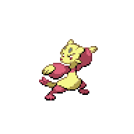

Goldenleaf Town
Post-Gym Activities

| Trainer | Location |
Battle Girl Janelle |
In front of Sheridan Village Shop |
At this point, the chapter title card wouldn't show up yet but it's a good transition point. Grab the TM42 - Facade
 off on the side as the reward for beating Marianette. You're now in the Deep Sewers, which mostly contains the evolved forms of the Gearen Sewers. Step outside and eavesdrop on Venam's conversation with her friends. If you answer "Yes" to her question, you'll gain a relationship point with her. Anyways, she'll ask you why you were looking for her, and then agree to help out. You can quick travel with her to Route 3 if you want, but there's a few things we can do before heading to Goldenleaf proper. Before we leave East Gearen City though, the Pokeball Emporium now also sells Net Balls which can be useful for difficult to catch Water-types like Basculin.
off on the side as the reward for beating Marianette. You're now in the Deep Sewers, which mostly contains the evolved forms of the Gearen Sewers. Step outside and eavesdrop on Venam's conversation with her friends. If you answer "Yes" to her question, you'll gain a relationship point with her. Anyways, she'll ask you why you were looking for her, and then agree to help out. You can quick travel with her to Route 3 if you want, but there's a few things we can do before heading to Goldenleaf proper. Before we leave East Gearen City though, the Pokeball Emporium now also sells Net Balls which can be useful for difficult to catch Water-types like Basculin.
Head over to Sheridan Village, and in front of the Sheridan Village Shop will be two people, a Sawk, and a Throh.
Head over and speak with them, and you'll find out that the Sawk and Throh are retired movie stars. The girl will want them both, so she'll challenge you to a battle over the Pokemon. She's a strong opponent with a variety of Pokemon, but at this point your team should be more than capable than taking out her team. Be careful of getting swept by Rampardos or Zangoose and you should be fine. Once you defeat her, you can battle Throh and catch it, while Sawk will go to the other trainer. Once we have the ability to breed the Throh with Ditto, we'll be able to trade the original Throh to her so that we can get a Sawk.
With everything done, go ahead and meet up with Venam at the metal bars in front of the Route 3-Goldenwood Forest gate. She'll melt the bars for you, and you'll be free to enter the gate and beyond it, Goldenleaf Town.
Goldenleaf Town

| Item | Location |
Honey |
Directly north of the Route 3-Goldenleaf gate, left of the path |
Super Potion |
On the road near the first intersection |
Red Shard |
Under the tree near Ren's house |
Health Wing |
Up the stairs next to the gym |
Dark Gem |
Left side of the guarded garden in the south part of the town |
Ghost Gem |
Right side of the guarded garden in the south part of the town |
Welcome to Goldenleaf Town, where the inhabitants are less than welcoming of outsiders. You'll see a cutscene once you enter the town, but we don't have to progress the story right away. You're free to explore the area for a bit, near the house in the center of town Schoolgirl Julie
 will battle you, and along the southern part you can battle Ghost Guy Pietro
will battle you, and along the southern part you can battle Ghost Guy Pietro to gain access to the tall grass garden. Along the top left, you'll come across a cuttable tree
to gain access to the tall grass garden. Along the top left, you'll come across a cuttable tree where you can gain access to the Wispy Ruins behind the waterfall. There's a few encounters there that you may be interested in. A little south from that tree is a bridge leading to a graveyard, where you can talk to a girl
where you can gain access to the Wispy Ruins behind the waterfall. There's a few encounters there that you may be interested in. A little south from that tree is a bridge leading to a graveyard, where you can talk to a girl who is actually Ditto, and also grab a Zygarde Cell. Finally, you can quick travel to and from Goldenleaf Town using Truck Guy located around the bottom left of the town. One final thing we can do before moving on is enter the house to the right of the Giratina statue. You'll be able to talk with Ren's mom and learn a bit more about their family. Finally, you can find Driftloon in the grass here for Zumi's quest. This will be her last assignment, so if you want you can use TRUCKGUY to complete the sidequest, but we'll go over it again before the chapter ends.
who is actually Ditto, and also grab a Zygarde Cell. Finally, you can quick travel to and from Goldenleaf Town using Truck Guy located around the bottom left of the town. One final thing we can do before moving on is enter the house to the right of the Giratina statue. You'll be able to talk with Ren's mom and learn a bit more about their family. Finally, you can find Driftloon in the grass here for Zumi's quest. This will be her last assignment, so if you want you can use TRUCKGUY to complete the sidequest, but we'll go over it again before the chapter ends.
With all that done, we can now continue the story. Go ahead and talk to the group of people by the Giratina statue, and you'll be thrown into a battle against Ghost Girl Sariah.
 Beat her, and then Mosely will run away. Head to the upper left part to talk to Narcissa,
Beat her, and then Mosely will run away. Head to the upper left part to talk to Narcissa, the leader of the town, and she'll agree to battle you if you calm the trainers in the Pokemon Center down. Save, and then head over to the Pokemon Center. Before you get to enter, Aelita will show up and challenge you to a battle.
the leader of the town, and she'll agree to battle you if you calm the trainers in the Pokemon Center down. Save, and then head over to the Pokemon Center. Before you get to enter, Aelita will show up and challenge you to a battle.
Student Aelita
|
Gligar, Level 29 |
Ground | Bulldoze |
|---|---|---|
| Steel Wing | ||
| Flying | Aerial Ace | |
| U-Turn | ||
|
Staravia, Level 30 |
Normal | Take Down |
| Steel Wing | ||
| Flying | Aerial Ace | |
| U-Turn | ||
|

Mienfoo, Level 30 - Sitrus Berry |
Fighting | Fake Out |
| Force Palm | ||
| Aerial Ace | ||
| Knock Off | ||
|
Hawlucha, Level 32 - Black Belt |
Fighting | Gale Strike |
| Roost | ||
| Flying | Aerial Ace | |
| Bulk Up | ||

Combusken, Level 31 - Charcoal |
Fire | Flame Charge |
| Night Slash | ||
| Fighting | Thunder Punch | |
| Bulk Up | ||
Reward:  1440 1440
|
||
This battle shouldn't be anything too difficult. Most of her Pokemon aren't fully evolved yet and most of them don't have any particularly strong moves. Due to her Flying-type and Fighting-type focus, most of her Pokemon also share the same type weaknesses. A strong Psychic-type and Electric-type combo should be able to damage most of her team, and Gligar will fall to most Water-type coverage moves. Be careful of using special Flying-type moves, as they can turn into a Grass-type move due to the field.
After the battle, go ahead and enter the Pokemon Center. After talking to Aelita inside, a group of Goldenleaf citizens will enter to try to force everyone away. You'll have to battle Ghost Girl Sariah
 again. Beat her, heal up, then exit the Pokemon Center to battle Ghost Girl Sariah
again. Beat her, heal up, then exit the Pokemon Center to battle Ghost Girl Sariah for the third time. Watch the scene afterwards. Before we catch up with Narcissa at Wispy Tower, we can take a detour through the upper left exit that leads to the Forgotten Path.
for the third time. Watch the scene afterwards. Before we catch up with Narcissa at Wispy Tower, we can take a detour through the upper left exit that leads to the Forgotten Path.
Forgotten Path

| Item | Location |
Green Shard |
In a small clearing top left of the entrance sign |
Super Potion |
Left side of the overgrown area before the path |
Dusk Stone |
Halfway up the tower after the Cut tree |
Ether |
Underneath a tree near the river |
Ghost Gem |
Across the way north from the Ether |
Great Ball |
Behind the left stone pillar |
Revive |
Bottom left of the right stone piller |
There aren't any trainers here, and the encounters are mostly the same as in Goldenleaf Town. There are a few hidden items scattered around, and if you cut the tree on the right side you can climb the vines to get a hidden Dusk Stone halfway, and TM39 Rock Tomb.
 That's all we can do here for now, so heal up and head off to the bottom left exit of Goldenleaf Town and onto Wispy Path.
That's all we can do here for now, so heal up and head off to the bottom left exit of Goldenleaf Town and onto Wispy Path.
<< Chrysalis Courtyard Gym Leader Wispy Path >>
×
Battle Girl Janelle
|
Sandslash, Level 32 |
Ground | Slash | |||
|---|---|---|---|---|---|
| Sand Tomb | |||||
| Fury Swipes | |||||
| Swift | |||||
|
Ninjask, Level 32 |
Bug | Bug Bite | |||
| Slash | |||||
| Flying | Swords Dance | ||||
| Protect | |||||
|
Zangoose, Level 33 |
Normal | Crush Claw | |||
| Slash | |||||
| Revenge | |||||
| Hone Claws | |||||
|
Rampardos, Level 32 |
Rock | Chip Away | |||
| Head Smash | |||||
| Zen Headbutt | |||||
| Take Down | |||||
|
Sneasel, Level 33 |
Ice | Ice Shard | |||
| Low Kick | |||||
| Dark | Slash | ||||
| Hone Claws | |||||
|
Reward: 1386
|
|||||